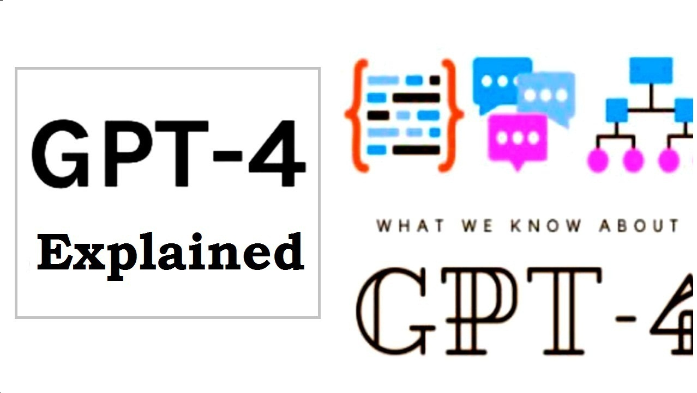

OpenAI's GPT-4: Latest Features, FREE Or Paid?

As we're well known, OpenAI's GPT-3.5, with its advanced natural language processing capabilities, took the tech world by storm when it was released in 2022 and gained huge popularity with its ChatGPT version. Though its datas & informations were bound to 2021, its abilities ignited the fire and began the race of Artificial Intelligence. Since, the language model has been used in various applications, including content creation, chatbots, and language translation. Now, the anticipation for the release of OpenAI's GPT-4 is at an all-time high, with many wondering what new features the latest iteration of the language model will bring!
So, whether you're a tech enthusiast, a developer, or a business owner looking to leverage the latest tech innovations, we've got you covered. By regularly visiting our website, you can rest assured that you will stay informed about upcoming tech updates and stay ahead of the competition. Focused on the title 'OpenAI's GPT-4: Latest Features, FREE Or Paid?', we're excited to share our research and experties with you. We hope you'll find our article useful and valuable for sure.
Table of Content
- Introductory Part
- GPT-4, The Future of AI is Here
- Will AI Articles Be Removed For Copyrighting?
- What Features Will GPT-4 Possess?
- Will GPT-4 be Free Or Paid?
- How To Use ChatGPT Without Copyright Issue?
ChatGPT and Copyright: What You Need To Know
Learn More: Click Here→
Meet GPT-4, The Future of AI is Here
While GPT-3.5 was already an impressive language model, GPT-4 promises to take things to the next level. One of the most exciting features of GPT-4 is its advanced multi-model capabilities. While GPT-3.5 could generate text and even images to a limited extent, GPT-4 can also generate audio and videos. This opens up a whole new range of possibilities for industries like advertising, entertainment, and education. With GPT-4, we can expect to see AI-generated content that is even more sophisticated, creative, and immersive than anything we've seen before.
GPT-4 represents a major leap forward in the development of AI language models. With its advanced technology, it has the potential to transform the way we communicate, learn, and create content. Whether you're an AI enthusiast or just curious about the future of technology, GPT-4 is definitely something to keep an eye on.
If you are interested in learning more about ChatGPT copyright legal issues, we have a dedicated article on our website that covers these topics in depth. We encourage
you to visit the page to learn more about how to use ChatGPT while respecting copyright laws and
avoiding legal issues.
Learn More: Click Here→
Will AI Articles Be Removed For Copyrighting?
Learn More: Click Here→
What Features Will GPT-4 Possess?
GPT-4 is a new language model being created by OpenAI capable of generating text similar to human speech and respond feedbacks accordingly. The new , advanced AI technology is rumored to have many extraordinary features.
Though, There's no official declaration of exact features from the parent company, but we're expecting that GPT-4 will possess some of these exclusive features. They're listed below:
- Model Size: The GPT-3.5 version contains 175 Billion parameters whereas the new GPT-4 model is expected to have about 500 Billion parameters. Now imagine, if the previous version of GPT is able to generate such amount of accuracy and creativity, how will the new GPT-4 version perform? You must've asked something with the ChatGPT chatbot and found some textual information in return. Those informations were fetched using various sources like wikipedia, books, news articles, scientific journals. So, the new GPT-4 will work on same principle but using advanced technology and updated datas.
- Multi-Functionality: The limitations of ChatGPT 3.5 Model is going to be the real strength of the new version. As GPT-3.5 could only generate textual feedbacks based on user's query, the GPT-4 version is expected to process not only texts but also images, audio and video. However, it'll have the ability to create AI-generated videos from simple text prompts as well. This feature is expected to be powered by a video processing module that will work with GPT-4.
- Reduced Response Latency: We're aware about the low speed of ChatGPT 3.5 during peak hours. This is one of the main issues of the chatbot version 3.5. So, in order to solve this problem in some extent GPT-4 is supposed to reduce its response latency. This will not only improve user experience but also help in generating quicker feedbacks to the users.
- Precise Informaion: Though GPT-3.5 generates useful information to a good extent but there's always a chance of generating side infos rather than the factual informations. In order to reduce this problem, the new AI version is there with us with advanced optimized user environment.
Will GPT-4 be Free Or Paid?
Since, GPT-3.5 follows both free and paid plans allowing everyone to access the chatbot whether you're using ChatGPT for regular standard response or premium/faster response. Though the free plan of GPT-3.5 has some limitations, OpenAI used those limitations to paid plan where users need to pay 20$/month to access the chatbot services even during peak hours.
It is more likely that GPT-4 will follow paid membership to deliver its services to the end users. Though it may provide some basic services like more precise feedbacks, also images generation for absolutely free but it will limit its free plans for sure. The AI generated videos and animations, voices are more likely to be included in the paid plan of GPT-4.
Being a paid service provider isn't a bad idea as it will reduce the heavy traffic load to the servers and reduce the maintenance cost. As the new GPT-4 version is expected to possess different multi-model features, the paid service will limit the use of such remarkable AI only for useful tasks rather than unnecessary works.
How To Use ChatGPT Without Copyright Issue?
Learn More: Click Here→